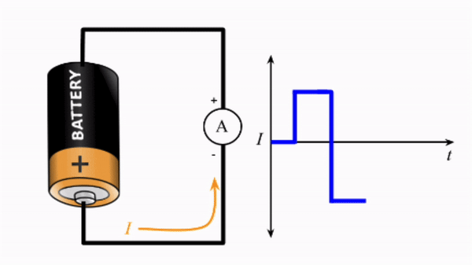
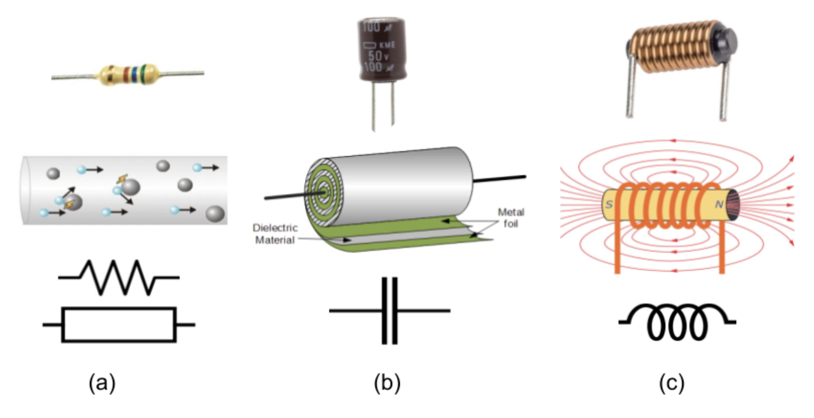
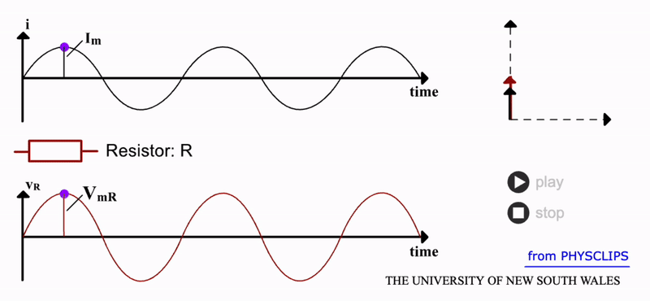
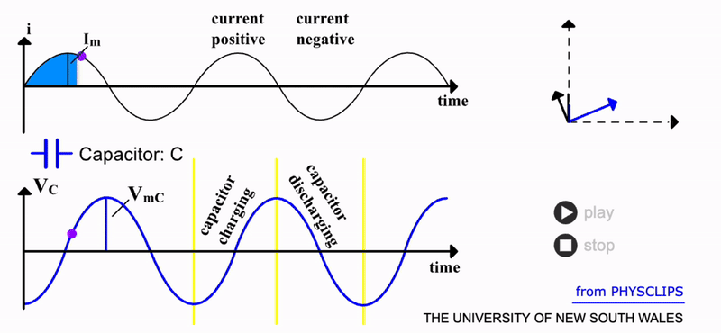
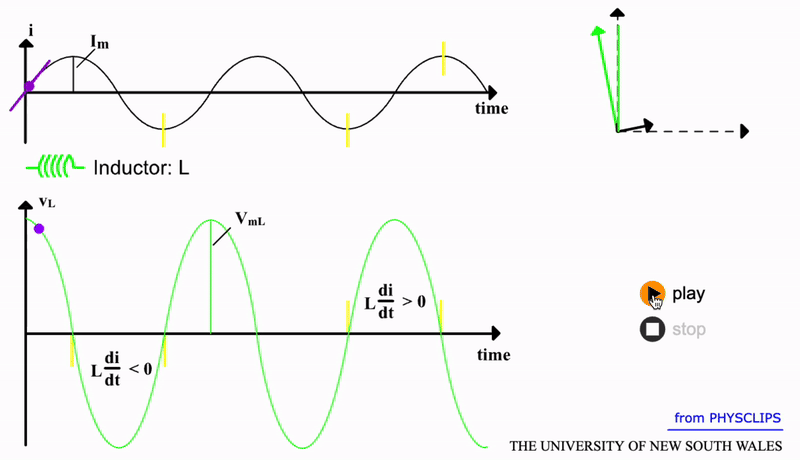
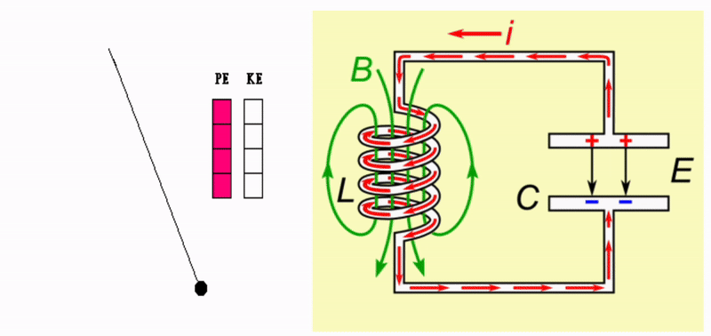
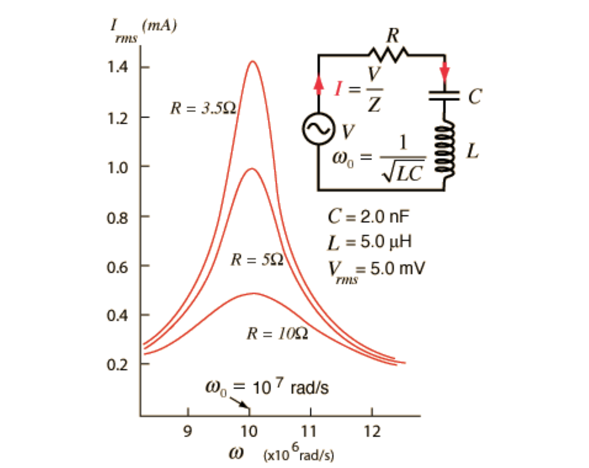

AC Circuits#
Dr Mark Quinn & Dr Ross Mathieson.
Warning
This session will be used to introduce you to circuit simulating software. The tasks in this workshop are directly related to those that you will perform in the experimental labs in weeks 8 and 9.
Please use the first 30 minutes of this session to familiarise yourself with the theory associated with AC circuits as this will aid your understanding in the lab activities.
Learning Objectives#
Have an understanding of the physical principles that drive AC circuits.
Have an understaning of the operating principles of an LCR circuit.
Be able to simulate circuits using specialised software.
Be able to analyse data extracted from simulated circuits.
Note
A second set of notes concerning circuit simulations and the associated activities for the latter two learning objectives will be released during this workshop. This is deliberate so that you first have time to engage with the theory materials.
AC Circuits Theory#
This information has been directly lifted from the AC and LCR lab scripts. Depending on which lab group you are in you may encounter these notes prior to the workshop. They are here for completeness and you should review them before you either simulate or build the AC circuits in question.
Background Information#
Charged particles such as electrons can be moved and controlled via electric fields. For example, applying a potential difference of 5 volts from a battery across a 1 metre length of wire creates a 5 V/m electric field. Free electrons in the wire will be accelerated along one direction. Such direct current (DC) is typically used to transfer energy from a voltage source to other devices. Examples here include your phone charger or a simple light bulb.
Changing the direction of current is simple, just swap the direction of the electric field. This is equivalent to swapping the wire connections on the battery. The electrons are then pushed in the opposite direction. Hence, if we swap the wire connectings rapidly, at some frequency \(f\), we can produce alternating current (AC). Such a process, as depicted in the gif below, would create a square wave. The novelty here is that we can use AC to send and control time varying signals.

You will already have begun to utilise such signals. Recall the skills session utilising signal measurements. There you produced AC signals using signal generators and microphones. The wave properties of these signals were then measured using an oscilloscope. Much of our experimental work involves creating and detecting signals of various properties.
Learning how to control and process such signals is the main motivation for studying and developing AC circuits. There are three primary components which form AC circuits:
Resistors:
Defined by resistance R
Control current, I, via V=IR relationship
Used for signal processing
Capacitors:
Defined by capacitance C
Store electrical energy in surface charge
Control timing of signals
Used for signal processing
Inductors:
Defined by inductance L
Store electrical energy in a magnetic field
Control timing of signals
Used for signal processing
See Figure 2 for a visual description of these components. We will spend the first half of this skills session investigating how these components respond to alternating current.

For most purposes, alternating current is modulated as a sine wave via:
where \(I_m\) is the maximum current. As mentioned earlier, the current is driven by alternating fields, i.e \(V(t)\), delivered by some power supply. The rate at which these electric fields change direction is defined by the frequency, \(f\), or the angular equivilent \(\omega = 2 \pi f \). Most power supplies or signal generators enable frequencies of up to a million cycles per second or 1 MHz.
For reasons of efficiency, the mains electricity in most countries is distributed as AC. In many cases including the UK, the frequency is a nominal 50Hz. In our labs, we can create higher frequency currents in the kHz to MHz ranges. As the voltage in AC is not at its peak for most of the cycle time, a more useful measure is the root mean square or RMS value. This represents the average voltage during the cycle, which for a sine wave is:
Reactance and Impedence#
How a component reacts to such alternating current is a key point of this session. Some components may resist an alternating field. Other types of components may offer little resistance to changing current direction. This is of course distinct from its response to DC where we use the term resistance with symbol \(R\). Hence, to distinguish the resistance to AC, we will give it the name of reactance with symbol \(X\). A key point to note is that reactance is frequency dependant i.e. \(X(\omega)\).
Physically, the DC resistance component dissipates energy due to collisions in the form of heat. Reactance, on the other hand, stores energy as an electric field (such as in a capacitor) or magnetic field (as in an inductor).
The combined opposition to current flow is termed the impedance. This includes both the DC resistance and the AC reactance:
The factor of \(i\) in the impedance accounts for a possible phase lag between the current and voltage in the component.
Resistor Response#
A resistor, as shown in the gif below, has zero reactance i.e. \(X_R=0\), so its impedance is \(Z_R=R\). The collisions of free electrons with atoms does not increase when this current is alternating. We should then expect that the energy loss from such collisions is:
We can see this response from a resistor in the gif below. Notice that both the current and voltage are in phase. This is further demonstrated by the rotating vectors represented in the phasor diagram. As it rotates through a full cycle, both I and V vectors remain overlapped. Here the current and resistor voltage drop are shown as a function of time. Source: UNSW.

Capacitor Response#
Compared to a resistor, a capacitor has a more interesting response to AC. This component provides a large surface area for charge to accumulate. This occurs via the force of the electric field from the power supply.
As charge \(Q\) accumulates on one side of the capacitor, a potential difference builds according to \(V_C=Q/C\). But of course, with AC, the charge is then pulled off and attracted to the other side of the capacitor. We can predict the resulting response by adding up all the charge via:
Hence, the voltage across the capacitor varies as:
It is apparent that this predicts a negative cosine function as opposed to the original sine function of the current. This is depicted in the gif below. There is now a \(90\) degree phase difference between the two signals. The current leads the capacitor voltage by a quater cycle. Physically, this is intuitive; it takes time to build up and remove charge (and hence potential) on the capacitor. So, the capacitor has a builtin time delay when used in an AC circuit.
Unlike a resistor, an ideal capacitor does not dissipate energy i.e. it has zero resistance, \(R_C=0\). It does however have ‘resistance’ to AC i.e. reactance. If we analyse its response in terms of maximum voltage, the equation above predicts that \(V_{mC}=I_m/C \omega\) . The \(1/C \omega\) term here signifies the capacitor’s reactance \(X_C\). So for an ideal capacitor, its total impedance is:
Notice the inverse relation of impedance and AC frequency for a capacitor. A lower frequency of current will result in a higher impedance. Low frequencies enable more charge to be accumulated since there is more time between cycles. But capacitors have a maximum charge limit and hence when filled will impede further charge. At higher AC frequencies, this limit is never approached since there is insufficient time before the capacitor discharges. Hence, there is lower impedance at higher frequencies for capacitors. Source: UNSW.

Inductor Response#
An inductor has an even more active response to AC. An inductor is essentially an electromagnet. In a DC scenario, a static magnetic field would be produced by the coil (with \(N\) turns) and core which comprise the inductor. But changing the direction of the current will also change the magnetic flux \(\Phi_B\). This changing magnetic field will induce a potential difference across the inductor opposing the AC:
The constant \(L\) is termed the inductance . The faster the current changes, the larger the opposing voltage from the inductor. So, we certainly expect some reactance to high frequency AC. We can derive this by completing the derivative in the equation above to show that:
Note that in this case, the phase difference is +90 degrees. This indicates that the inductor voltage will lead the AC by a quater cycle. A visual of this response is shown in the gif below (the tangent line indicates the derivative \(dI/dt\) since this rate of change determines the induced voltage \(V_L\)):

Source: UNSW.
We can also derive the reactance of an inductor. The maximum inductor voltage is \(V_{mL}=L \omega I_m = X_L I_m\) and hence \(X_L=L \omega\). As alluded to the first inductor equation above, an inductor will resist higher frequency AC and this is confirmed by \(X_L \propto \omega\). Conversely, in the DC limit i.e. low frequency, the opposing voltage \(V_{L} \to 0\) and hence the reactance also goes towards zero. So for an ideal inductor, with \(R_L=0\), its total impedance is:
LC and LCR Circuits#
The interplay between a capacitor and an inductor can create a resonator. As the name implies, such a system exhibits resonance. A defining characteristic of this is the storage of energy in different forms. For example, a swing (pendulum) resonates as energy is transferred between kinetic and potential forms. This is depicted in the gif below. Without any friction or drag, such a system would oscillate forever.
In the case of a capacitor and an inductor, the energy is electromagnetic. The buildup of charge on the capacitor stores energy within an electric field. When discharged, the charge induces a voltage across the inductor which stores the energy in a magnetic field. The inductor’s magnetic field induces a voltage that drives current onto the capacitor, setting up an electric field and repeating the process.
A simple pendulum resonates due to the interplay of potential and kinetic energy. In the case of an inductor-capacitor, energy oscillates back and forth between the capacitor’s electric field, \(E\), and the inductor’s magnetic field, \(B\).

As with any harmonic oscillator, we expect that this system will oscillate at some natural frequency. This can be predicted via the specific combination of inductance \(L\) and capacitance \(C\). The inclusion of damping in this system would take the form of electric resistance \(R\) in the circuit. To replenish the energy lost to damping we can drive the system with an AC power supply. As you know when pushing a person on a swing, choosing a driving frequency which matches the system’s resonant frequency will result in maximum amplitude. Here, this will be in terms of the amount of current flowing through the LCR circuit. When the driving frequency from the power supply matches the resonant frequency, we should observe that the amount of current oscillating between the inductor and capacitor will significantly increase to some maximum value.
We can derive a simple physical model by starting with an LC circuit. To do so, we will model the flow of current \(I(t)\) through the circuit. As \(I(t)\) changes, the resulting potential difference across the components will also vary. Recall that the potential difference across the inductor is:
and for the capacitor:
To include current in our model, we can take the time derivative of this equation so that:
Since there is no input voltage into our circuit, the overall potential must be zero:
and hence:
Substituting, we have:
which can be arranged as a second order differential equation for the system:
Notice how this follows the form of a simple harmonic oscillator:
Therefore, we can state that the natural frequency of the LC circuit is:
with units of radians per second. At this frequency, the current is maximum i.e. resonant. This develops since the individual reactance of each component cancels-out (\(X_L=X_C\)). Hence, the impedance goes to zero and the current goes to maximum.
Next, let us add some damping to the system. In a circuit, this takes the form of resistance which produces a potential of:
Now since, \(V_L + V_C + V_R = 0\), the new differential equation for the LCR circuit is:
Our model now is in the form of a damped-driven harmonic oscillator. Solving this differential equation for the unknown function \(I(t)\) results in:
The value of the current amplitude, \(I_0\), can be solved using the total impedance Z:
Examples of the LCR current are shown in the image below for different values of \(R\). The width of the peak is a measure of bandwidth. Rather than at half the peak value (the full width at half-max (FWHM) bandwidth is approximately \(\Delta \omega / \sqrt{3}\)), this width is typically measured at half the peak current or voltage gain. This can be predicted as:
Increasing \(R\) (or decreasing \(L\)) will increase the width of the bandwidth. The circuit effectively performs as a bandpass filter. Higher frequencies are blocked by the increasing reactance of the inductor to fast changing current. Conversely, lower frequencies are blocked by the increasing capacitor reactance.

The minimum impedance occurs at \(\omega_0\), where the capacitor and inductor reactances cancel out. Increasing the damping term \(R\) results in greater bandwidth but reduced current. Source.
Rather than current, our experiments will measure potential difference. Hence, if we measure the voltage drop across the resistor, we can deduce the AC current via the linear relationship \(V_R =I(t)R\). We can derive a physical model for the LCR circuit in terms of its response to driver frequency. The response will be measured as the the voltage drop across the resistor:
We know that the amount of current \(I(t)\) that the system can conduct is limited by the alternating input potential:
and the overall impedance of the circuit is:
So the potential is:
Notice how we can predict \(V_{out}\) for any driver frequency. Ideally we would like to write the model in terms of the resonant frequency and bandwidth:
Since the output potential cannot exceed the input, we can write the LCR response model as the ratio:
This is referred to as the gain of the circuit and helps us compare the frequency response for different circuits. Note that the ratio of \(\omega_0/ \Delta \omega\) is referred to as the quality factor \(Q\) which can also be written as \(1/\omega_0 RC\).
With this model, at resonance \(\omega = \omega_0\) we expect that \(V_{out}/V_{in}=1\) where the inductor and capacitor impedance cancel, \(Z_L+_ZC=0\). Hence, all the potential energy loss is across the resistor. However, this is assuming that there are no other sources of resistance in the circuit, i.e. \(R_{total}=R\). A likely additional resistance is that of the wire coiled inside the inductor. While in practice this will be small, it will not be zero. If we include this and other sources of resistance out model can be written as:
which predicts a height of the peak will be \(R/R_{total}<1\) at resonance when \(\omega = \omega_0\). The presence of the imaginary number \(i\) indicates a phase difference between \(V_{out}\) and \(V_{in}\). We can model this phase difference analytically as:
Notice that we expect negative \(\Phi\) at large \(\omega\) due to the inductor impedance and positive \(\Phi\) at low frequencies when the capacitor impedance dominates. We can also notice that at resonance when \(\omega = \omega_0 \), the phase difference goes to zero.